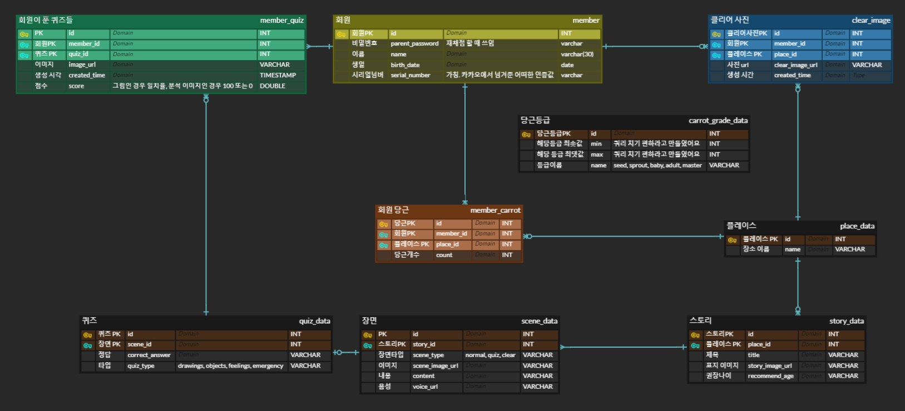
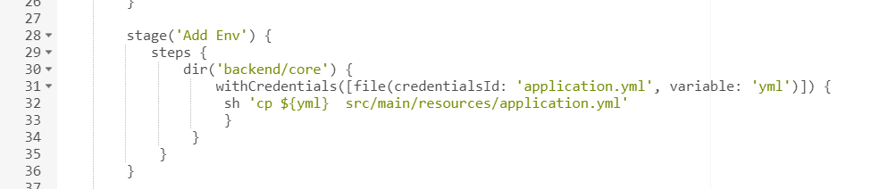
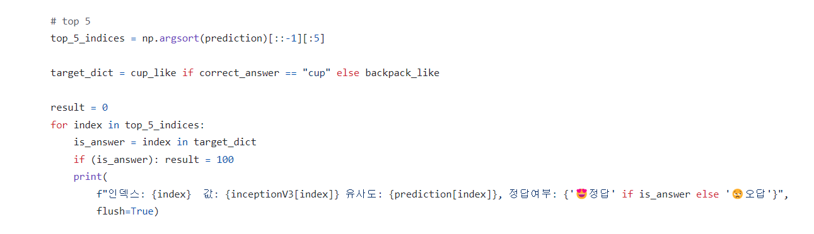

토비의 당근밭
| 항목 | 내용 | ||||||||
|---|---|---|---|---|---|---|---|---|---|
| 기간 |
|
||||||||
| 사용 기술 |
|
||||||||
| 한 줄 설명 | AI 퀴즈를 기반으로 한 미취학 아동 교육 서비스 | ||||||||
| 개발 인원 (역할) |
🙋♀️🙋♂️🙋🧞♀️🙋♂️🙋 6명 (팀장) | ||||||||
| Github | https://github.com/KimDohaAcc/Toby-carrot-garden |
🎁 UI


📖 프로젝트 소개
아동이 언어 및 올바른 행동양식을 학습하는 서비스로, AI 퀴즈를 맞추며 동화 스토리를 체험할 수 있습니다.
퀴즈를 맞추면 당근의 레벨이 올라가 성취감을 높입니다.
한 스토리를 끝내면 스테이지 클리어 기념 사진을 촬영하여 재미 요소를 더했습니다.
비밀번호로 잠겨 있는 부모페이지에서는 정답 통계 그래프 및 또래 아이와의 비교 그래프를 볼 수 있으며, 아이가 푼 퀴즈를 재채점할 수 있습니다.
ver 1.0 배포 후 실제 아동 사용자의 피드백을 반영하여 튜토리얼을 삽입한 1.1 버전을 배포하였습니다.
기술 특장점
- Kafka를 사용해 비동기로 AI 분석을 실행하며 서버 오류 및 응답 지연을 고려했습니다.
- MobileNet, InceptionV3 모델과 Pytorch로 학습된 AI 모델을 감정 퀴즈, 인지 퀴즈, 그림 퀴즈 분석에 사용하여 다양한 퀴즈를 구현했습니다.
- 장소 및 스토리의 확장 가능성을 고려하여 DB를 설계했습니다.
- PWA를 적용하여 사용자 경험을 향상했습니다.
🙋♂️ 역할
스토리 관련 API 구현
서버 인프라 구축
Jenkins 파이프라인 구축
AI 모델 테스트
🎠 ERD
🧵 시스템 아키텍처

- Kafka를 통해 AI 분석을 요청합니다
- AI 결과는 Redis에 저장하고 클라이언트는 폴링으로 분석 결과를 요청합니다
- 이미지는 S3에, 로그는 디스코드에 저장합니다
- Jenkins와 Docker를 이용해 CI/CD와 컨테이너화를 구축했습니다
🎯 기술 리뷰
[Docker 컨테이너와 Nginx의 활용]
Python AI 서버의 구동 효율성을 높이기 위해 Docker Image를 분리했습니다.
라이브러리, 모델 등 환경 설정 Image와 코드가 담기는 Image를 분리하고
Dockerfile에 환경 설정 Docker Image를 포함하여 서버 구동 시간을 줄일 수 있었습니다.
또한, Docker Network 구성, Nginx 리버스 프록시 적용, SSL 인증서 발급을 통해 인프라 구축에 대한 실전 경험을 쌓을 수 있었습니다.
[Jenkins 파이프라인을 이용한 CI/CD 구축]
개발 과정에서 배포 시 발생하는 문제를 빠르게 볼 수 있도록 'feature/기능' 브랜치에 커밋이 발생하면 컨테이너를 중지하고 새로운 이미지를 만들어 컨테이너를 올렸습니다. Gitlab에는 env 파일을 올리지 않기 때문에, 필요한 환경 변수를 어떻게 추가해줄지 고민했습니다. 서버에 환경 변수 파일을 올려두거나 파이프라인에 환경 변수를 직접 넣어주는 것은 보안 상 좋지 않다고 생각하여 Jenkins의 Secrete File을 활용하였습니다.
[PWA 서비스 워커의 캐시 문제 해결]
프론트엔드에서 PWA를 적용하면서 백엔드 요청을 프론트엔드의 캐시로 돌려주는 캐시 문제가 발생했습니다. 프로젝트에서 발생하는 문제는 1. 백엔드 엔드포인트에 대해 서비스 워커 캐시를 찾아 돌려주는 걸 막는 설정이 없으며 2. 설정을 추가하여도 플러그인의 디폴트 설정으로 빌드 시 서비스 워커가 초기화 되고 있는 것이었습니다. 이를 해결하기 위해 vite-pwa 공식 문서와 서비스 워커 설정 파일을 공부하여 백엔드로의 요청을 캐싱하지 않도록 구성했습니다. 추후 다른 팀도 같은 문제를 겪고 있음을 인지하고 노션으로 배포하여 팀 간 공유하였습니다.
[AI 물체 분석 결과 개선]
물체 분석을 위한 기존 로직은 분석 결과 중 가장 일치율이 높은 것이 정답과 일치하는지 여부를 확인하는 것이었습니다. 그러나 가장 일치하는 것이 전혀 다른 물건일 경우도 있었을 뿐만 아니라 정확한 분류가 아닌 비슷한 분류로 찾는 경우도 있어 정답률이 10%에 그쳤습니다.
이를 개선하기 위해 데이터 사전에서 비슷한 분류의 모든 사물을 담는 배열을 만든 후, AI의 사물 분석 결과 중 상위 5개를 컵 데이터 배열과 비교해서 일치하는 값이 있다면 정답 처리를 하였습니다. 이를 반영한 후에 정답률이 95%로 나오며 성공적으로 개선되었습니다.